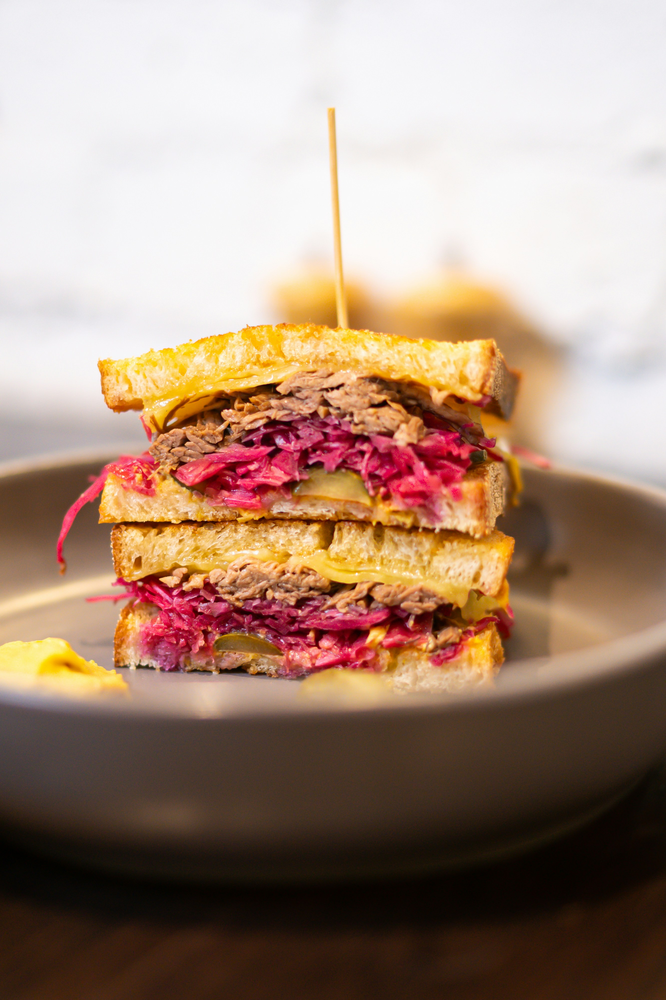

Home
Reuben

Description
The Reuben sandwich is delicious. The corned beef is a hit at the
dinner table.
Ingredients
- 8 slices rye bread
- 1/2 cup Thousand Island dressing
- 8 slices Swiss cheese
- 8 sloices deli sliced corned beef
- 2 tablespoons butter, softened
Steps
- Gather all ingredients and preheat a large griddle or
skillet over medium heat.
- Spread one side of bread slices evenly with Thousand
Island dressing.
- On four bread slices, layer one slice Swiss cheese, 2
slices corned beef, 1/4 cup sauerkraut, and a second
slice of Swiss cheese. Top with remaining bread slices,
dressing-side down. Butter the top of each sandwich.
- Place sandwiches, butter-side down on the preheated
griddle; butter the top of each sandwich with remaining
butter. Grill until both sides are golden brown, about
5 minutes per side.
- Serve hot. Enjoy!